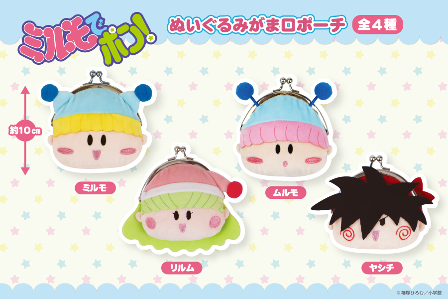
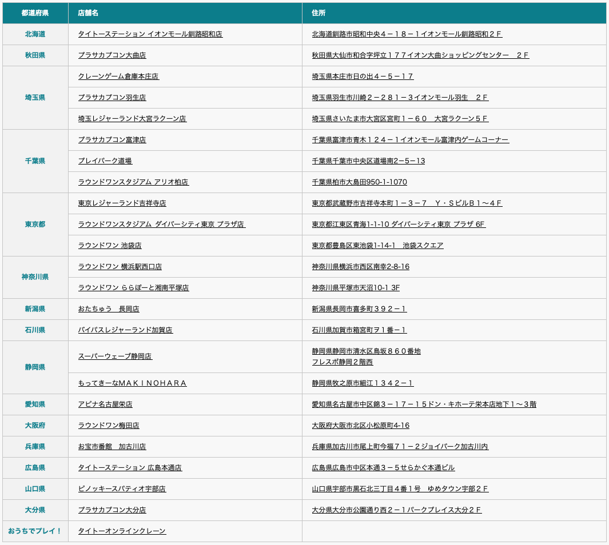
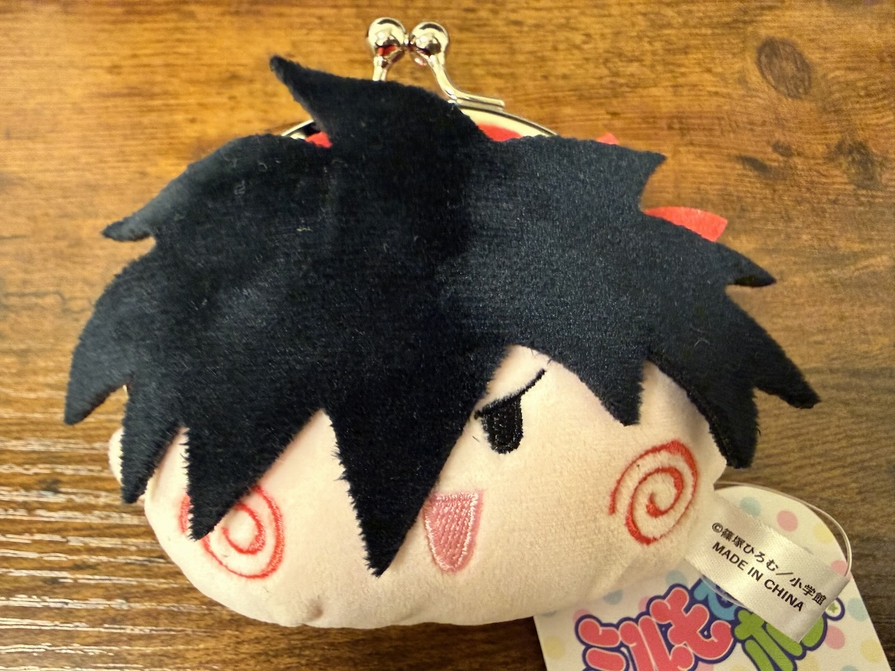
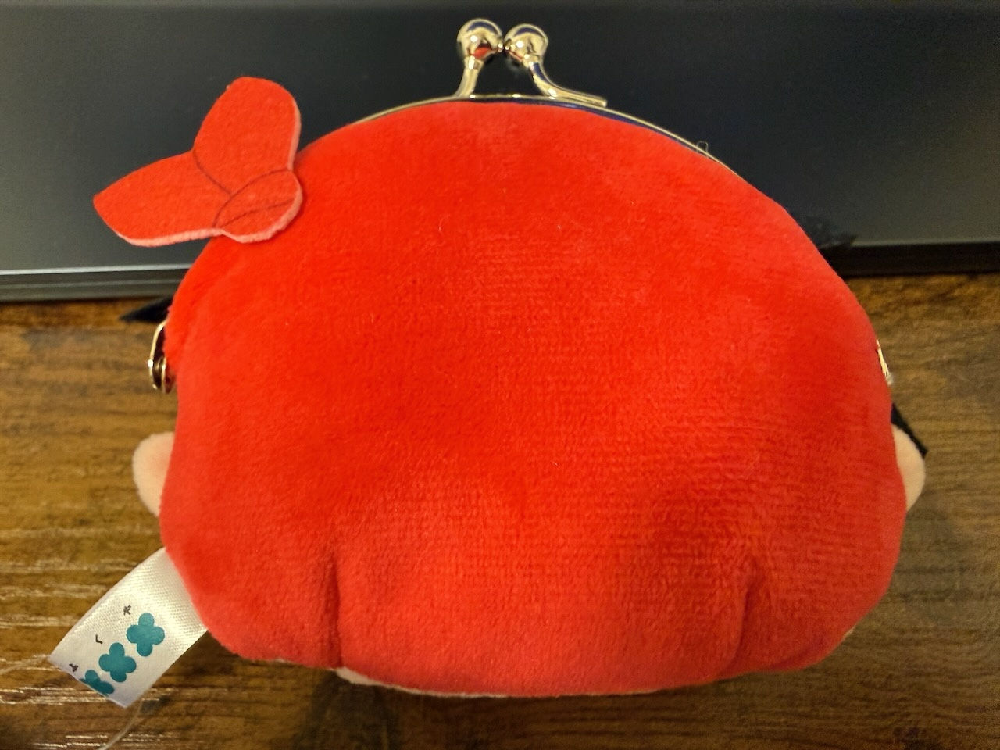
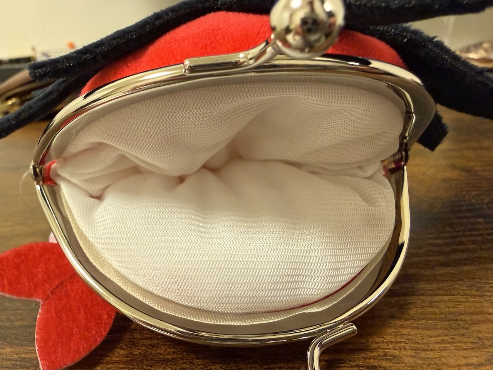
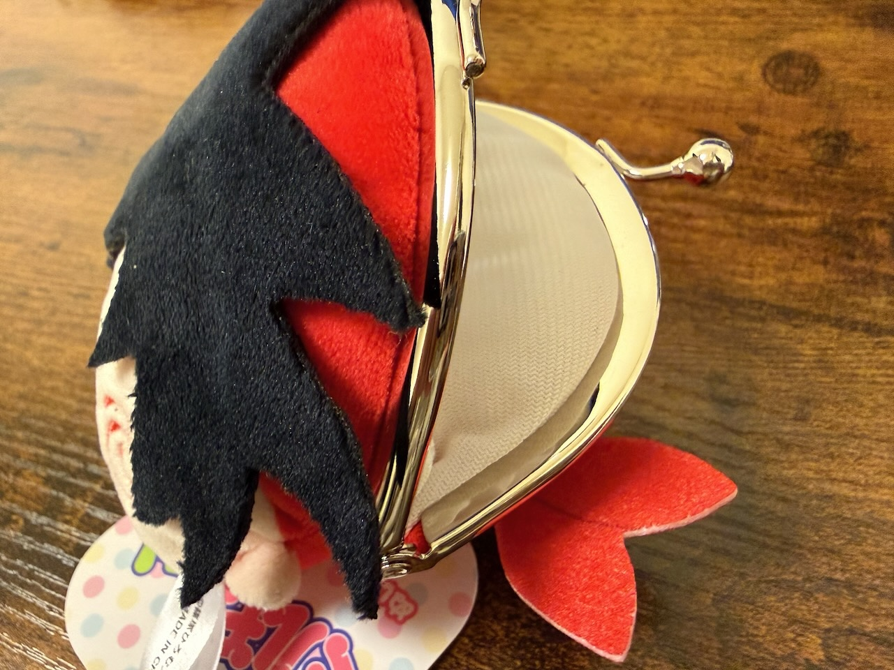
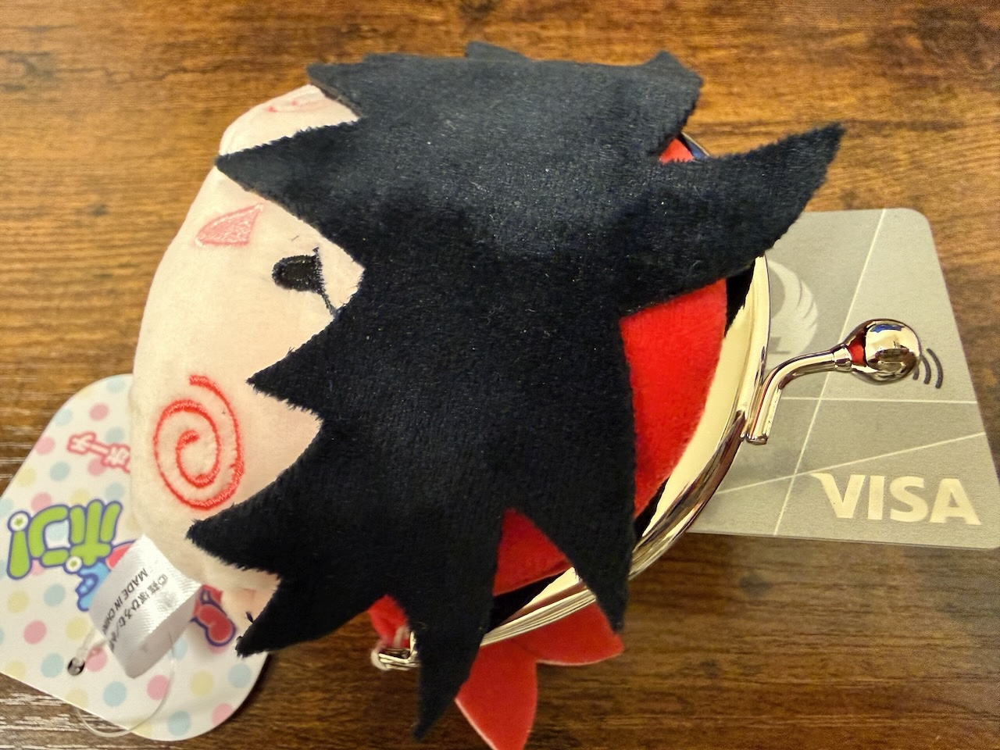
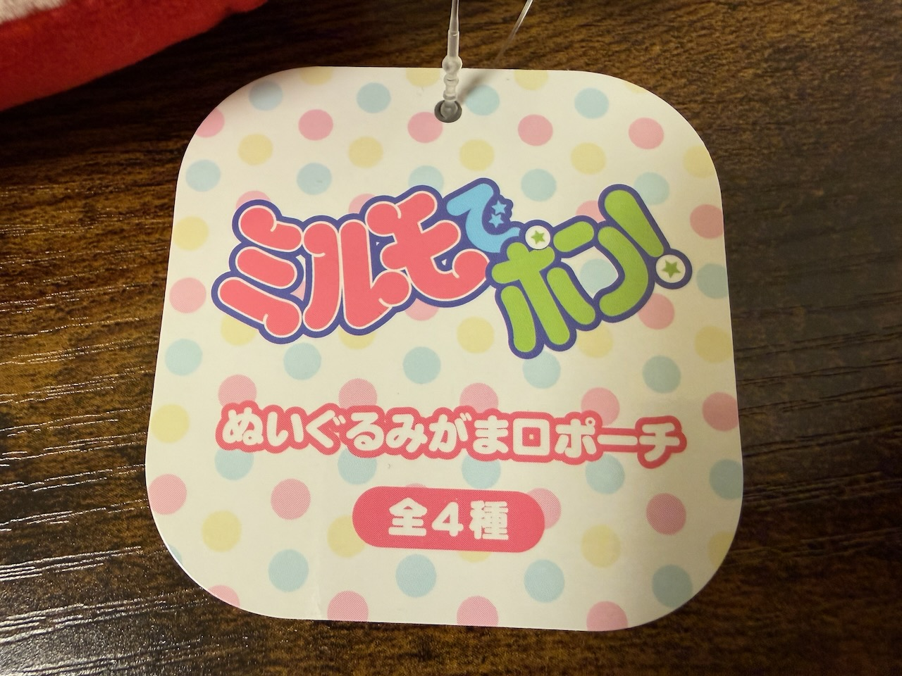
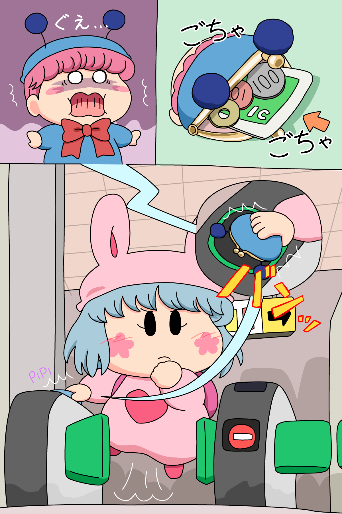

ミニボストンバッグとほぼ同じ時期（２０２５年１２月中旬）に、『ミルモでポン！ がま口ポーチ』もフクヤさんより発売されました。
こちらもクレーンゲームなどのプライズ品になります。
私もなんとか１種類だけゲットできましたので、以下にグッズ詳細とともにレポートしていきますね。

商品の紹介画像は、記録も兼ねてフクヤさんの公式ホームページから引用させていただきました。
がま口ポーチはミルモ・リルム・ムルモ・ヤシチの４種類。
各妖精ならではの表情をしているのがポイント高いです。
以下は公式ホームページに記載されていた取扱店舗情報です。
取り扱い店舗数はあまり多くないので、実際にお店で見つけられた人はラッキーかも！？

ここからは商品レポートです。
私はメルカリでヤシチをゲットしました。
メルカリでも出品数はかなり少なかったので、ミルモグッズの中でもレアな部類かもしれませんね(^◇^;)
ゲットした人はぜひぜひ大事に使ってください〜〜＞＜

ヤシチのがま口ポーチです。
ヤシチならではのドヤ顔ですね。

後ろから。
この無理やり感のある頭巾の結び目がヤッくんがま口の一番の注目ポイントかも。

それではご開帳〜(^^)

横からだとこんな感じです。

残念ながらカード類は入りません(^◇^;)

がま口ポーチのタグです。
最後にですが、ボストンバッグと同様に今回も記念イラストを描きました。

ムルモのがま口をゲットしたパピィちゃん。
早速使い始めたけど、ガサツな性格なのであまり考えずにいろいろなものをがま口に突っ込んじゃいます。
そして自動改札機にタッチするシーンでも・・・。
こういう使い方をしていたらすぐに壊れてしまいそうですが、でもフクヤさんのがま口はしっかり作られているので耐久力は結構あるのかもしれません。
※実際には交通系ICカードは入りません(^◇^;)
(2026/2/7)